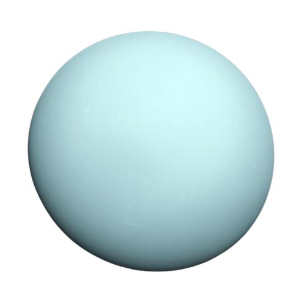

Urano está compuesto de agua, metano y amoniaco sobre un pequeño centro rocoso. Su atmósfera está hecha de hidrógeno y helio, como Júpiter y Saturno, pero además contiene metano. El metano es lo que le da a Urano el color azul.
